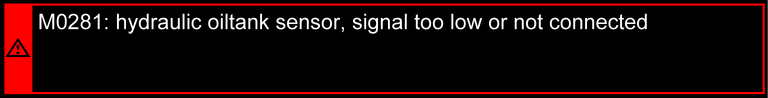
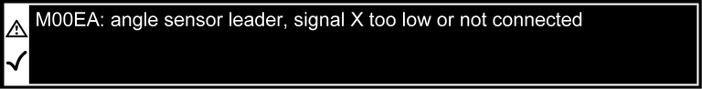
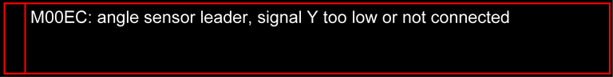

Bildschirmseite Fehlermeldung
Taste Bildschirmseite Fehlermeldung
In der Menüleiste auf Bildschirmseite Fehlermeldung umschalten.
Die Bildschirmseite Fehlermeldung informiert in Landessprache über Fehler an der Maschine.
Taste Umschalten
Fehlermeldung wurde quittiert.
Auf obige Fehlermeldung umschalten.
Taste Umschalten
Fehlermeldung wurde quittiert.
Auf untere Fehlermeldung umschalten.
Taste Umschalten (leuchtet rot)
Auf obige Fehlermeldung umschalten.
Taste Umschalten
Auf untere Fehlermeldung umschalten.
Anzeige Anzahl der Fehlermeldungen
Zeigt die Anzahl der Fehlermeldung an.

Fig. 2590: Bildschirmausschnitt Fehlermeldung - nicht behoben und nicht quittiert (leuchtet rot)
Fig. 2590: Bildschirmausschnitt Fehlermeldung - nicht behoben und nicht quittiert (leuchtet rot)

Fig. 2591: Bildschirmausschnitt Fehlermeldung - nicht behoben aber quittiert
Fig. 2591: Bildschirmausschnitt Fehlermeldung - nicht behoben aber quittiert

Fig. 2592: Bildschirmausschnitt Fehlermeldung - behoben aber noch nicht quittiert (blinkt rot)
Fig. 2592: Bildschirmausschnitt Fehlermeldung - behoben aber noch nicht quittiert (blinkt rot)
Anzeige Bildlaufleiste
Durch die Fehlermeldung navigieren. Die Bildlaufleiste wird ab fünf Fehlermeldungen aktiv.